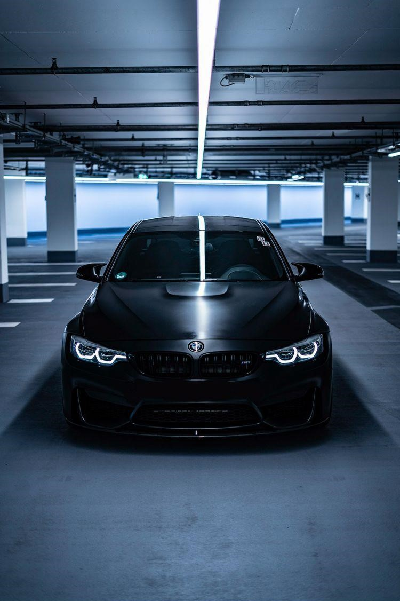

My name is Antwon Frager, 27yr old father of a boy. I enjoy working on sports cars, watching anime and spending time with family.
“Tell me and I forget, teach me and I may remember, involve me and I learn.”
BMW M3 is the current car I own and sortive my dream car. The BMW M3 is a high-performance version of the BMW 3 Series, developed by BMW's in-house motorsport division, BMW M GmbH. M3 models have been produced for every generation of 3 Series since the E30 M3 was introduced in 1986.For the 2015 model year, BMW introduced their M3 variant of the F30 3 Series. Known as the F80, this generation of M3 was the first to feature a model code different than the one upon which it is based. The F80 was only available as a sedan as the BMW M4 was introduced in 2014. Powered by the BMW S55 twin turbo straight six engine, the F80 M3 has the distinction of being the first turbocharged M3.
